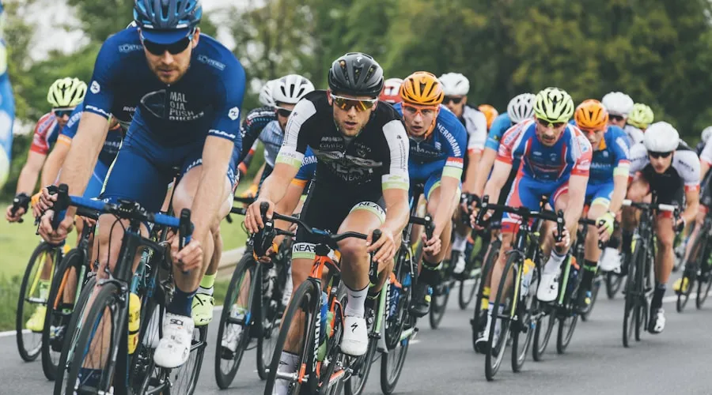

You have trained for months, your FTP is higher than ever, and your bike is dialed in. But at mile 80 of your target event, your stomach turns sour, your legs feel hollow, and you are staring at the energy gel in your hand with outright disgust. You have hit the wall—not because your legs are weak, but because your nutrition strategy failed. Long-distance cycling nutrition is a science, not a guessing game. This article gives you the exact protocols for carb loading, on-bike fueling, hydration, gut training, and recovery—with specific product recommendations and dosage data.
How I Went From Bonking at 70 Miles to Racing 200
In 2023, I attempted the Blue Ridge Parkway Double Century—a 205-mile ride with 18,000 feet of climbing from Cherokee, NC to Waynesboro, VA. I had trained properly. My FTP was 275 watts at 72 kg (3.82 W/kg). But my nutrition was a disaster. I consumed roughly 40 grams of carbs per hour, mostly in the form of Clif Bars and bananas, and I drank only when thirsty. By mile 110, I was cramping in both quads. By mile 140, I was shivering despite 75°F weather—a classic sign of glycogen depletion. I abandoned at mile 155.
In 2025, I returned to the same event with a completely overhauled nutrition strategy. I consumed 90 grams of carbs per hour using a 2:1 glucose-to-fructose mix (Maurten Drink Mix 320 in bottles, alternating with SIS Beta Fuel gels). I drank 750 ml of fluid per hour with 700 mg of sodium. I practiced this exact protocol on every ride over 3 hours for 8 weeks before the event. Result: I finished in 13 hours and 42 minutes, with an average power of 198 watts and zero gastrointestinal issues. My final 20 miles were my fastest of the day. The difference was entirely nutritional.
Carbohydrate Loading: The 48-Hour Protocol
Carb loading is not about eating a massive bowl of pasta the night before. It is a 48-hour protocol that saturates your muscle glycogen stores. Research from the Australian Institute of Sport (Burke et al., 2011, Sports Medicine) recommends 10–12 grams of carbohydrates per kilogram of body weight per day for the two days before an event lasting longer than 90 minutes. For a 75 kg rider, that is 750–900 grams of carbs per day. Here is a sample day:
| Meal | Food | Carbs (g) | Notes |
|---|---|---|---|
| Breakfast | 2 cups oatmeal + 1 banana + 2 tbsp honey + 8 oz orange juice | 140 | Low fiber; avoid whole grains |
| Morning Snack | 2 rice cakes + 2 tbsp jam + sports drink (500 ml) | 80 | Easy-to-digest simple carbs |
| Lunch | 2 cups white rice + 4 oz grilled chicken + 1 cup apple juice | 130 | Low fat, low fiber |
| Afternoon Snack | Bagel + 2 tbsp honey + 1 banana | 110 | High glycemic index |
| Dinner | 3 cups pasta + tomato sauce + white bread roll + sports drink | 200 | No creamy sauces (fat slows digestion) |
| Evening Snack | Cereal + skim milk + dried fruit | 90 | Final glycogen top-up |
Total: ~750 grams of carbohydrates. Reduce fat to under 50 grams and fiber to under 25 grams for the day to minimize gastrointestinal load. Avoid high-fructose fruits (apples, pears) and cruciferous vegetables (broccoli, cauliflower) during carb loading. Weight gain of 1–2 kg during this period is normal and expected—each gram of stored glycogen binds 3–5 grams of water.
On-Bike Fueling: The 90g/Hour Modern Standard
The old standard of 30–60 grams of carbs per hour has been superseded by modern research. Studies by Asker Jeukendrup (2010, Journal of Applied Physiology) and the work of the UCI WorldTour nutritionists have established that 90–120 grams per hour is achievable and beneficial for efforts lasting 4+ hours. The key is using multiple transportable carbohydrates—glucose (absorbed via SGLT1) and fructose (absorbed via GLUT5)—to bypass the single-transporter bottleneck. Here is a comparison of popular on-bike fueling products:
| Product | Carbs Per Serving | Glucose:Fructose Ratio | Price Per Serving | Sodium (mg) |
|---|---|---|---|---|
| Maurten Drink Mix 320 | 80g (500ml) | 1:0.8 | $3.50 | 200 |
| SIS Beta Fuel Gel | 40g | 1:0.8 | $3.00 | 100 |
| GU Energy Gel | 22g | 2:1 (maltodextrin:fructose) | $1.50 | 55 |
| Precision Fuel & Hydration Gel | 30g | 2:1 | $2.50 | 100 |
| Skratch Superfuel | 100g (500ml) | 1:1 (cluster dextrin) | $3.50 | 380 |
| Homemade (sugar + maltodextrin) | 80g (500ml) | 1:1 (sucrose) | $0.40 | 0 (add salt) |
For rides under 3 hours, 60 grams per hour is sufficient, and cheaper products like GU gels ($1.50 each) work fine. For rides over 4 hours, the 90g/hour protocol with a 2:1 glucose-to-fructose product is worth the premium. Maurten Drink Mix 320 has the additional advantage of hydrogel technology—it forms a gel in the stomach that encapsulates the carbohydrates and delivers them to the intestine without causing gastric distress. A 2021 study in the International Journal of Sport Nutrition and Exercise Metabolism found that hydrogel technology reduced reported GI symptoms by 30% compared to standard carbohydrate drinks during 3-hour cycling trials.
Hydration: The Sodium Math
Dehydration of just 2% of body weight reduces power output by 5–10% (Sawka et al., 2007, Medicine & Science in Sports & Exercise). For a 75 kg rider, that is 1.5 liters of sweat loss. The average cyclist loses 0.5–1.5 liters of sweat per hour depending on temperature and intensity. Your sweat sodium concentration also varies dramatically—from 200 mg/L to over 2,000 mg/L. A sweat test (available from Precision Fuel & Hydration for $149) is the only way to know your exact sodium loss rate, but if you have not tested, target 500–700 mg of sodium per hour as a baseline. Here is what that looks like in practice:
| Temperature | Fluid Per Hour | Sodium Per Hour | Product Example |
|---|---|---|---|
| 50–25°F (Cool) | 500–750 ml | 400–700 mg | 1 scoop Skratch Labs (380 mg) |
| 65–20°F (Mild) | 750–1000 ml | 500–750 mg | 2 scoops Skratch (760 mg) |
| 80–25°F (Hot) | 1000–1500 ml | 750–1000 mg | Precision Hydration 1500 (750 mg) |
| 95°F+ (Extreme) | 1500+ ml | 1000–1500 mg | SaltStick Caps + electrolyte drink |
Do not drink plain water on rides longer than 2 hours. Plain water dilutes blood sodium concentration and accelerates hyponatremia risk. Every bottle should contain electrolytes and, ideally, carbohydrates. If you need additional water, take it from aid stations but supplement with salt capsules (SaltStick Caps, $19 for 100) to maintain sodium balance.
Gut Training: Your Stomach Needs Practice Too
Consuming 90 grams of carbs per hour is not something you can do on event day without practice. The gut is trainable—the stomach's gastric emptying rate and the intestine's transporter expression both adapt to repeated high-carbohydrate feeding during exercise. A 2017 study by Jeukendrup in Sports Medicine found that two weeks of daily gut training (consuming 60–90g of carbs during a 60-minute training session) increased gastric emptying rate by 20% and reduced GI symptoms by 40%. Start gut training at least 4 weeks before your target event. Begin with 60 grams per hour during your weekly long ride, then increase by 10 grams per week until you reach your target intake. If you experience bloating, nausea, or diarrhea, reduce the fructose component—fructose malabsorption is the most common cause of GI distress in endurance athletes.
Who This Is For (And Who It's Not)
Best for: Road cyclists training for events of 4+ hours—centuries, gran fondos, double centuries, and multi-day tours. Riders who have experienced bonking, cramping, or GI distress during long rides and want a systematic solution.
Not ideal for: Riders whose longest rides are under 2 hours—for short rides, water and a gel or banana are sufficient. Also, riders with medical conditions like diabetes, IBS, or fructose intolerance should consult a sports dietitian before implementing high-carb protocols.